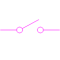
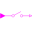

SamplerIconBasic graphical layout of block used for sampling of Boolean signals |

|
Extended by (3)
|  |
Modelica.Clocked.BooleanSignals.Interfaces Basic block used for sampling of Boolean signals |
|
Modelica.Clocked.BooleanSignals.Sampler Sample the continuous-time, Boolean input signal vector and provide it as clocked output signal vector. The clock is provided as input signal |
|
|
Modelica.Clocked.BooleanSignals.Sampler Sample the continuous-time, Boolean input signal and provide it as clocked output signal. The clock is provided as input signal |